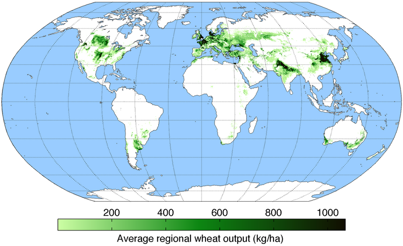
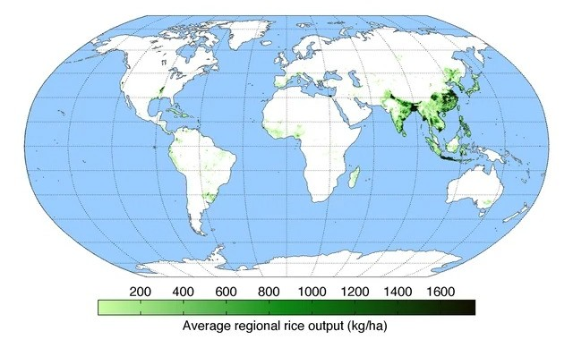
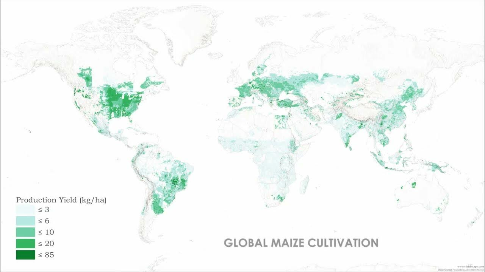
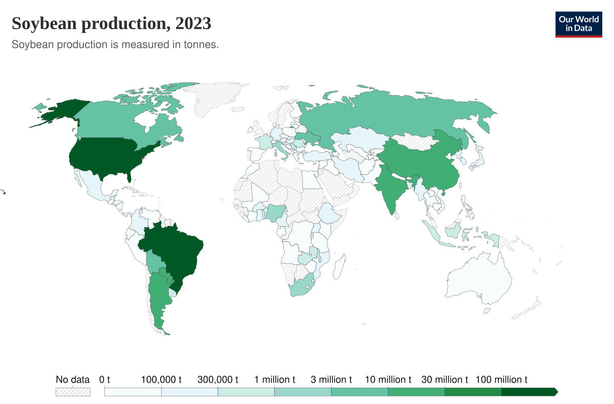
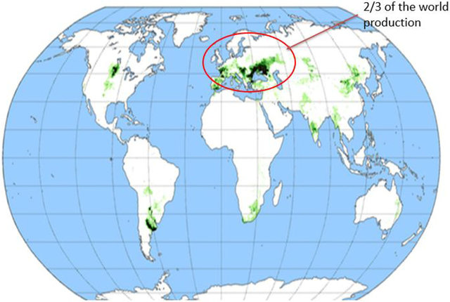
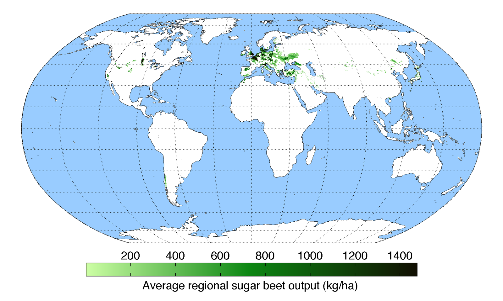

主要分布在温带地区，中国华北地区、印度北部、欧洲全境西欧为主、美国中部和北部、南美洲阿根廷中北部、澳大利亚东南和西南部。

主要分布在亚洲地区，中国的南方地区和东北地区、日本、韩国、台湾、马来西亚、菲律宾、泰国、越南、印度东部，非洲中西部、刚果盆地、阿根廷中北部和加勒比群岛。

、全球广泛种植，中国东部、越南、印度南部和北部、印度尼西亚、欧洲中南部、土耳其、美国中部和东部、南美洲巴西和阿根廷北部。

主要分布在美洲和亚洲，中国东北少量在华北和四川、印度中西部内陆、美国中东部内陆、南美洲巴西内陆和阿根廷北部内陆。

主要分布在中国、俄罗斯、乌克兰、罗马尼亚的黑海西北岸、西班牙、法国南部和阿根廷中部，美国北部边境中部的小片区域

主要分布在欧洲、土耳其、中国东北、日本美国北部边境
